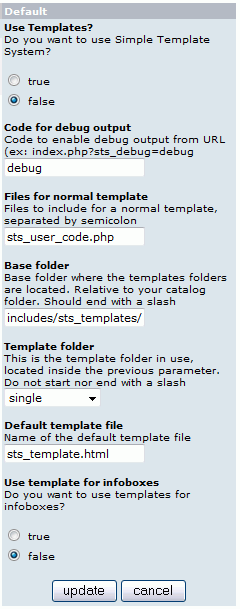

Version: v2.1.2
File: catalog/includes/modules/sts/sts_default.php
Author: Bill Kellum aka BKellum
This is the main module; it must be installed in order to use STS.

| Parameter | Comment |
| Use Templates? | Select 'True' to use STS, or 'False' to use the stock version of osCommerce. |
| Code for debug output | Enter the code here that will enable you to see debug information on your pages by adding ?sts_debug=[this code] in the URL of the page you want to debug. If STS is disabled, the URL trick still works; meaning, you are the only one to see the STS version of your shop. |
| Files for normal template | When the default template
is used, the files listed here will be included during process of the script.
Those files must be located in “catalog/includes/modules/sts_inc” folder and
generally contains code to build extra placeholders. For example: By default the file sts_user_code is included, but if you don't use any placeholder defined inside this file, just remove it from the list. On the other hand, if you add a contribution which adds some new placeholders, like the famous Header Tags Controller, then you only need to add the file in the list. The files must be separated by semicolons. Note: New placeholders can also be defined in sts_user_code.php instead of creating new files to include. The choice is up to you. |
| Base folder | The folder inside your catalog where the templates sets (or template folders) are located. Default value is "includes/sts_templates/” so you'll have your template folders inside "catalog/includes/sts_templates". |
| Template folder | The folder inside the base folder where templates will be read. Default value is "single", a folder with only 1 template, good for a start. Change to "multiple" when you are more familiar with STS, because it contains several templates for different pages and infoboxes. Simply select the template set from the provided drop down menu. |
| Default template file | The default template used if no specific template for the page is found. |
| Use template for infoboxes | Set to true if you want to use html templates for your
infoboxes, false otherwise. To use this option, you need to have installed
the includes/classes/boxes.php file that comes with STS. Note: You need a folder called "boxes" inside your templates folder in which you place your infobox template files. |
How it works:
The default module is used when no enabled module is found for the displayed page. Templates must be located in the templates folder (includes/sts_templates/single by default). If the module for the displayed page is enabled, STS will use it to decide what template to use. In this case, refer to the module documentation to know how it works. Example: if the displayed page is index.php, STS will look if the index module is enabled in admin and will use it if yes. Otherwise the default module is used and its logic is as follows (first found first used):
1. If page name contains the word "popup" or "info_shopping_cart", STS is disabled and no template will be used.
2. Use pagename.php.html if exists. (Example: login.php.html for the page login.php).
3. Use default template like defined in parameter "Default template file" (by default it is sts_template.html).